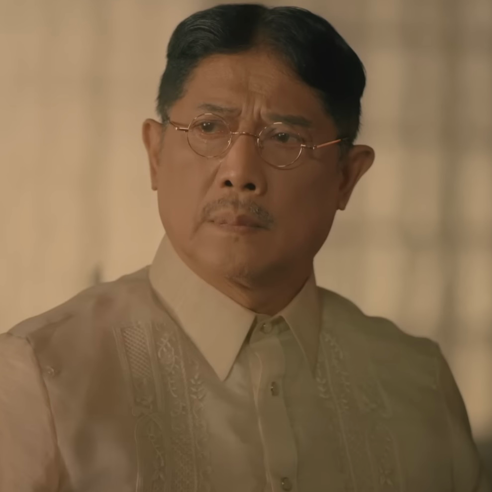

|
Juan Crisostomo Ibarra y Magsalin |
- Went to Europe for his studies for 7 years
- Love interest of Maria Clara
- Son of Don Rafael
|
 |
Maria Clara |
- Daughter of Kapitan Tiago
- Studied in Beaterio in Sta. Catalina for 7 years
- Love interest of Crisostomo Ibarra
|
|  |
Kapitan Tiago |
- Maria Clara's Father
- After Don Rafael's death, he became the richest in San Diego
- Blindly follows friar's orders
|
 |
Padre Damaso |
- An arrogant Friar
- Wanted to separate Maria Clara and Ibarra
- Sometimes he's called as "Padre Garrote"
|
 |
Padre Salvi |
- Sometimes he's called as "Moscamuerte" or "Dead fly"
- Successor of Padre Damaso
- Likes to charge people for money instead of physically hitting on them like Padre Damaso
|
|
Sisa |
- Mother of Crispin and Basilio
- Married to Pedro who is jobless and loves gambling so he's sconsidered a red flag
|
 |
Basilio |
- Son of Sisa and older brother of Crispin
- Studied to become a doctor for him instead since Crispin is dead
|
|
Crispin |
- Son of Sisa and younger brother of Crispin
- Accused of stealing 2 gold pieces from the church
|
 |
Don Rafael |
- Father of Crisostomo Ibarra
- Was the richest man in San Diego
- Died in prison due to illness
|
 |
Tiya Isabel |
- Caretaker of Maria Clara
- Cousin of Kapitan Tiago
|
 |
Donya Victorina de Espadaña |
- Wife of Don Tiburcio de Espadaña
|
 |
Don Tiburcio de Espadaña |
- Husband of Donya Victorina de Espadaña
- Known as a "quack doctor"
|
|
Alperes |
|
 |
Donya Consolacion |
- Wife of Alperes
- Makeup enthusiast
|
 |
Elias |
- A fugitive
- Endured a lot of hardships
|
 |
Don Anastacio |
- Former student in philosophy
- Was called as "Tasiong Baliw" by people who aren't educated
|